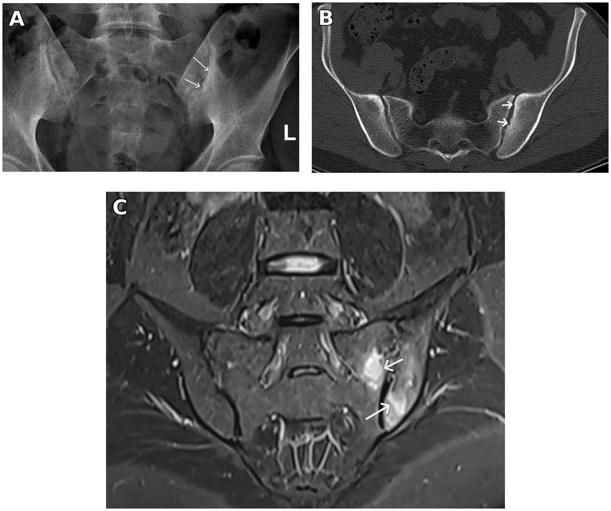

341 — Viêm cột sống: sacroiliitis ASAS, AS & PsA / Axial SpA
Tags: pattern:viem-cot-song vung:cot-song score:ASAS
Mức chắc chắn (certainty): tổng hợp y văn (literature synthesis) — nhóm tự biên từ y văn mở, chưa gắn ca nguyên văn đơn lẻ.
1. Tổng quan — viêm điểm bám gân + HLA-B27 + phù tủy cùng chậu
- Viêm cột sống dính khớp (AS): viêm điểm bám (enthesitis) + cùng chậu → cầu xương (syndesmophyte) + tre nứa (bamboo) — TẠI SAO đau lưng viêm (sáng sớm > 30 phút, đỡ vận động, khởi phát < 45 tuổi): viêm điểm bám cứng về đêm, vận động bơm máu giảm viêm.
- ASAS-MRI: phù tủy dưới sụn cùng chậu (≥ 1 ổ/2 lát liên tiếp hoặc ≥ 2 ổ/1 lát) = viêm hoạt tính — TẠI SAO STIR thấy sớm hơn X-quang nhiều năm: phù (nước) đến trước mòn-xơ-dính.
- HLA-B27 (+) 85–95% AS da trắng + viêm gân Achilles + viêm mống mắt là bộ ba ngoài trục.
2. Gamut đau lưng trẻ + cứng sáng (Gamut)
- Phù cùng chậu + HLA-B27 + < 45 tuổi: axSpA — NSAID + sinh học TNF/IL-17.
- Cầu xương + tre nứa + dính: AS mạn — vật lý trị liệu + sinh học (đừng nắn bẻ!).
- Ngón dồi + DIP + vảy nến: PsA trục — IL-17 + da liễu.
- 1 bên + sốt + cấy (+): viêm cùng chậu nhiễm trùng (brucella/lao) — kháng sinh, đừng sinh học.
3. Bảng so sánh phân biệt (ma trận đối chiếu)
| Thực thể (entity) | Hình ảnh điển hình | Chốt vào (rule-in) | Chốt loại (rule-out) | Gợi ý xác nhận |
|---|---|---|---|---|
| axSpA sớm | Phù tủy cùng chậu STIR + HLA-B27 + viêm điểm bám | ASAS-MRI (+) + < 45 tuổi + cứng > 30 phút | 1 bên + sốt → nhiễm trùng | NSAID + MRI theo dõi + sinh học |
| AS mạn | Syndesmophyte + tre nứa + dính cùng chậu | Cầu xương + bamboo + HLA-B27 | Giữ khe + bờ treo → gout | Vật lý trị liệu + TNF/IL-17 |
| PsA trục | Cầu xương to lệch + ngón dồi + DIP + vảy nến | Parasyndesmophyte + da + DIP | Đối xứng + HLA-B27 → AS | IL-17 + PASI |
| Nhiễm trùng | 1 bên + áp-xe + sốt + cấy (+) | Đơn bên + sốt + CRP cao | 2 bên + HLA-B27 → SpA | Cấy + kháng sinh dài ngày |

(A) XR xơ nhẹ; (B) CT xơ + mòn sớm; (C) STIR phù tủy dưới sụn 2 bên = ASAS (+). Nguồn: Bedaiwi, Front Med 2026 Fig. 1, CC BY 4.0.4. Protocol + ASAS flowchart
- MRI cùng chậu STIR/T1 + HLA-B27 + CRP khi đau lưng viêm < 45 tuổi; X-quang chỉ thấy muộn.
flowchart TD
A[Đau lưng <45t + cứng sáng] --> B{MRI cùng chậu?}
B -->|Phù + HLA-B27| C[axSpA: NSAID + sinh học]
B -->|Cầu xương + dính| D[AS mạn: tập + sinh học]
B -->|1 bên + sốt| E[Nhiễm trùng: cấy + KS]
5. Cạm bẫy
- Chờ X-quang dính mới chẩn đoán = trễ 5–10 năm — MRI STIR + HLA-B27 chẩn đoán sớm.
- Viêm cùng chậu nhiễm trùng cho sinh học = thảm họa — 1 bên + sốt là cấy trước.
- Nắn bẻ cột tre nứa gãy ngang — loãng + cứng = gãy minor trauma, nẹp chứ không nắn.
6. Tự lượng giá — Blind Quiz
Ca 1 — Nam 31 tuổi viêm gân gót + CT chậu mờ, không đau lưng. Đọc 3 ảnh.
- Hỏi: STIR thấy gì? Đủ ASAS-MRI không? Thuốc gì trị cả da lẫn khớp?
Bấm để hiện đáp án
- Dấu hiệu (findings): phù tủy dưới sụn xương chậu + xương cùng 2 bên trên các lát liên tiếp.
- Chẩn đoán (diagnosis): viêm cùng chậu hoạt tính ASAS (+) trong SpA — adalimumab (trị cả HS da + khớp, phù giảm sau 6 tháng).
- Nguồn: Bedaiwi, Fig. 1, CC BY 4.0.
Ca 2 — Đau lưng 25 tuổi + cứng 1 giờ sáng + HLA-B27 (+), XR bình thường: AS không? Bước tiếp? (Bảng mục 3.)
Bấm để hiện đáp án
- Nghi axSpA sớm: MRI STIR cùng chậu (đừng chờ X-quang dính).
Bài liên quan chéo
- 300 – Tổng quan MSK
- 340 – Khớp ngoại vi (RA/PsA/Gout)
- 365 – Cổ chân (viêm gân Achilles)
Không dùng để chẩn đoán độc lập khi chưa có người hướng dẫn.